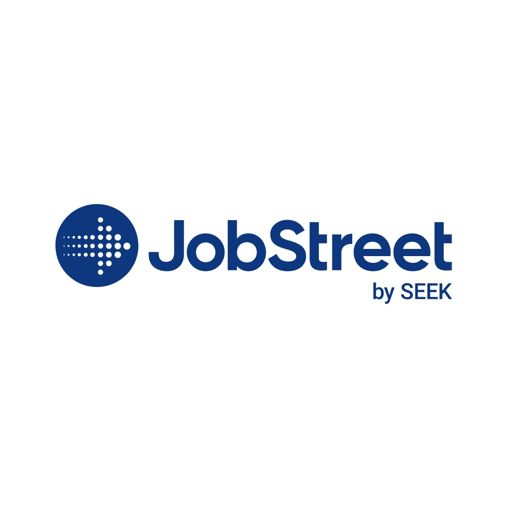
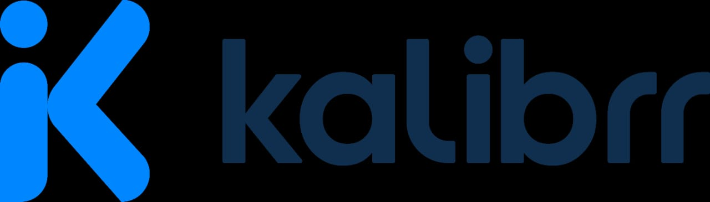

Temukan Ribuan Lowongan Pekerjaan Sesuai Minat & Bakatmu!
Kami telah mengintegrasikan Anda dengan platform pencarian kerja terkemuka untuk memudahkan Anda menemukan kesempatan terbaik dan mengurangi pengangguran di Indonesia.
Pilih Platform Pencari Kerja Favorit Anda:
Akses langsung ke berbagai portal karir populer untuk menelusuri lowongan terbaru.

Jobstreet
Salah satu portal pekerjaan terkemuka di Asia Tenggara dengan banyak pilihan.
Cari Sekarang

Kalibrr
Platform rekrutmen AI yang membantu mencocokkan kandidat dengan pekerjaan terbaik.
Cari SekarangTips Mencari Kerja Efektif & Penuh Motivasi
Mendapatkan pekerjaan impian membutuhkan lebih dari sekadar mengirim lamaran. Ikuti tips ini untuk meningkatkan peluang Anda!
- **Optimalkan CV dan Portofolio:** Pastikan CV Anda relevan, mudah dibaca, dan menonjolkan pencapaian. Sertakan portofolio jika pekerjaan Anda membutuhkan.
- **Siapkan Diri untuk Wawancara:** Latih jawaban untuk pertanyaan umum, riset perusahaan, dan siapkan pertanyaan untuk pewawancara. Percaya diri adalah kunci!
- **Bangun Jaringan Profesional:** Hubungkan diri dengan para profesional di bidang Anda melalui LinkedIn atau acara networking. Koneksi bisa membuka pintu peluang.
- **Gunakan Kata Kunci yang Tepat:** Sesuaikan CV dan lamaran Anda dengan kata kunci yang ada di deskripsi pekerjaan. Ini membantu sistem ATS (Applicant Tracking System) menemukan Anda.
- **Tingkatkan Soft Skill:** Kemampuan berkomunikasi, bekerja sama, adaptasi, dan pemecahan masalah sangat dihargai. Pelajari di bagian Tingkatkan Skill kami.
- **Tetap Semangat & Positif:** Proses mencari kerja bisa panjang dan menantang. Tetaplah positif, belajar dari setiap penolakan, dan jangan pernah menyerah!